Example 15.--
1D Transport: Kinetic Biodegradation, Cell Growth, and Sorption
A test problem for advective-dispersive-reactive transport was developed by Tebes-Steven and Valocchi (1997, 1998). Although based on relatively simple speciation chemistry, the solution to the problem demonstrates several interacting chemical processes that are common to many environmental problems: bacterially mediated degradation of an organic substrate; bacterial cell growth and decay; metal sorption; and aqueous speciation including metal-ligand complexation. In this example, the test problem is solved with PHREEQC, which produces results almost identical to those of Tebes-Steven and Valocchi (1997, 1998). However, care is needed in advective-dispersive transport simulations with PHREEQC, as with any reactive-transport model, to ensure that an accurate numerical solution is obtained.
The test problem models the transport processes when a pulse of water containing NTA (nitrylotriacetate) and cobalt is injected into a column. The problem includes advection and dispersion in the column, aqueous equilibrium reactions, and kinetic reactions for NTA degradation, growth of biomass, and cobalt sorption.
Transport Parameters
The dimensions and hydraulic properties of the column are given in table 38.
Table 38.
--Hydraulic and physical properties of the column in example 15
|
Property
|
Value
|
|
Length of column
|
10.0 m
|
|
Porosity
|
.4
|
|
Bulk density
|
1.5e6 g/m
3
|
|
Grams of sediment per liter (from porosity and bulk density)
|
3.75e3 g/L
|
|
Pore water velocity
|
1.0 m/hr
|
|
Longitudinal dispersivity
|
.05 m
|
Aqueous Model
Tebes-Steven and Valocchi (1997) defined an aqueous model to be used for this test problem that includes the identity of the aqueous species and log
K
's of the species; activity coefficients were assumed to be 1.0. The database file in table 39 was constructed on the basis of their aqueous model. For the PHREEQC simulation, NTA was defined as a new "element" in the
SOLUTION_MASTER_SPECIES data block named "Nta". From this point on "NTA" will be referred to as "Nta" for consistency with the PHREEQC notation. The gram formula weight of Nta in
SOLUTION_MASTER_SPECIES is immaterial if input units are moles in the
SOLUTION data block, and is simply set to 1. The aqueous complexes of Nta are defined in the
SOLUTION_SPECIES data block. Note that the activity coefficients of all aqueous species are defined with a large value for the
a
parameter (1x10
7
) in the
-gamma identifier, which forces the activity coefficients to be very nearly 1.0.
Table 39.
--Database for example 15
SOLUTION_MASTER_SPECIES
C CO2 2.0 61.0173 12.0111
Cl Cl- 0.0 Cl 35.453
Co Co+2 0.0 58.93 58.93
E e- 0.0 0.0 0.0
H H+ -1. 1.008 1.008
H(0) H2 0.0 1.008
H(1) H+ -1. 1.008
N NH4+ 0.0 14.0067 14.0067
Na Na+ 0.0 Na 22.9898
Nta Nta-3 3.0 1. 1.
O H2O 0.0 16.00 16.00
O(-2) H2O 0.0 18.016
O(0) O2 0.0 16.00
SOLUTION_SPECIES
2H2O = O2 + 4H+ + 4e-
log_k -86.08; -gamma 1e7 0.0
2 H+ + 2 e- = H2
log_k -3.15; -gamma 1e7 0.0
H+ = H+
log_k 0.0; -gamma 1e7 0.0
e- = e-
log_k 0.0; -gamma 1e7 0.0
H2O = H2O
log_k 0.0; -gamma 1e7 0.0
CO2 = CO2
log_k 0.0; -gamma 1e7 0.0
Na+ = Na+
log_k 0.0; -gamma 1e7 0.0
Cl- = Cl-
log_k 0.0; -gamma 1e7 0.0
Co+2 = Co+2
log_k 0.0; -gamma 1e7 0.0
NH4+ = NH4+
log_k 0.0; -gamma 1e7 0.0
Nta-3 = Nta-3
log_k 0.0; -gamma 1e7 0.0
Nta-3 + 3H+ = H3Nta
log_k 14.9; -gamma 1e7 0.0
Nta-3 + 2H+ = H2Nta-
log_k 13.3; -gamma 1e7 0.0
Nta-3 + H+ = HNta-2
log_k 10.3; -gamma 1e7 0.0
Nta-3 + Co+2 = CoNta-
log_k 11.7; -gamma 1e7 0.0
2 Nta-3 + Co+2 = CoNta2-4
log_k 14.5; -gamma 1e7 0.0
Nta-3 + Co+2 + H2O = CoOHNta-2 + H+
log_k 0.5; -gamma 1e7 0.0
Co+2 + H2O = CoOH+ + H+
log_k -9.7; -gamma 1e7 0.0
Co+2 + 2H2O = Co(OH)2 + 2H+
log_k -22.9; -gamma 1e7 0.0
Co+2 + 3H2O = Co(OH)3- + 3H+
log_k -31.5; -gamma 1e7 0.0
CO2 + H2O = HCO3- + H+
log_k -6.35; -gamma 1e7 0.0
CO2 + H2O = CO3-2 + 2H+
log_k -16.68; -gamma 1e7 0.0
NH4+ = NH3 + H+
log_k -9.3; -gamma 1e7 0.0
H2O = OH- + H+
log_k -14.0; -gamma 1e7 0.0
END
Initial and Boundary Conditions
The background concentrations in the column are listed in table 40. The column contains no Nta or cobalt initially, but has a biomass of 1.36x10
-4
g/L. A flux boundary condition is applied at the inlet of the column and for the first 20 hours a solution with Nta and cobalt enters the column; the concentrations in the pulse are also given in table 40. After 20 hours, the background solution is introduced at the inlet until the experiment ends after 75 hours. Na and Cl were not in the original problem definition, but were added for charge balancing sorption reactions for PHREEQC (see "Sorption Reactions" below).
Table 40.
--Concentration data for example 15
|
Constituent
|
Type
|
Pulse
concentration
|
Background
concentration
|
|
H
+
|
Aqueous
|
10.0e-6 mol/L
|
10.0e-6 mol/L
|
|
Total C
|
Aqueous
|
4.9e-7 mol/L
|
4.9e-7 mol/L
|
|
NH
4
+
|
Aqueous
|
.0
|
.0
|
|
O
2
|
Aqueous
|
3.125e-5 mol/L
|
3.125e-5 mol/L
|
|
Nta
3
-
|
Aqueous
|
5.23e-6 mol/L
|
.0
|
|
Co
2+
|
Aqueous
|
5.23e-6 mol/L
|
.0
|
|
Na
|
Aqueous
|
1.0e-3 mol/L
|
1.0e-3 mol/L
|
|
Cl
|
Aqueous
|
1.0e-3 mol/L
|
1.0e-3 mol/L
|
|
Biomass
|
Immobile
|
---
|
1.36e-4 g/L
|
|
CoNta
(ads)
|
Immobile
|
---
|
.0
|
|
Co
(ads)
|
Immobile
|
---
|
.0
|
Kinetic Degradation of Nta and Cell Growth
Nta is assumed to degrade in the presence of biomass and oxygen by the reaction:
HNta
2-
+ 1.62O
2
+ 1.272H
2
O + 2.424H
+
= 0.576C
5
H
7
O
2
N + 3.12H
2
CO
3
+ 0.424NH
4
+
.
PHREEQC requires kinetic reactants to be defined solely by the moles of each element that enter or leave the solution due to the reaction. Furthermore, the reactants should be charge balanced (no net charge should enter or leave the solution). The Nta reaction converts 1 mol HNta
2-
(C
6
H
7
O
6
N) to 0.576 mol C
5
H
7
O
2
N, where the latter is chemically inert so that its concentration can be discarded. The difference in elemental mass contained in these two reactants provides the stoichiometry of the elements C, H, O and N in the reaction. This stoichiometry is equal to the sum of the elements on the right-hand side of the equation, excluding C
5
H
7
O
2
N, minus the sum of the elements on the left-hand side of the equation. The corresponding change in aqueous element concentrations per mole of HNta
2-
reaction is given in Table 41 (positive coefficients indicate an increase in aqueous concentration, negative coefficient indicates a decrease in aqueous concentration).
Table 41.
--Reaction stoichiometry for oxidation of Nta
|
Component
|
Coefficient
|
|
Nta
|
-1.0
|
|
C
|
3.12
|
|
H
|
1.968
|
|
O
|
4.848
|
|
N
|
.424
|
The following multiplicative Monod rate expression is used to describe the rate of Nta degradation:
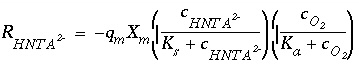
, (164)
where 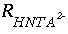
is the rate of HNta
2-
degradation (mol/L/hr), 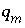
is the maximum specific rate of substrate utilization (mol/g cells/hr),  is the biomass (g cells/L), 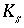
is the half-saturation constant for the substrate Nta. (mol/L), 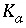
is the half-saturation constant for the electron acceptor O
2
(mol/L), and
c
i
indicate concentration (mol/L). The rate of biomass production is dependent on the rate of substrate utilization and a first-order decay rate for the biomass:
is the biomass (g cells/L), 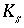
is the half-saturation constant for the substrate Nta. (mol/L), 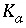
is the half-saturation constant for the electron acceptor O
2
(mol/L), and
c
i
indicate concentration (mol/L). The rate of biomass production is dependent on the rate of substrate utilization and a first-order decay rate for the biomass:
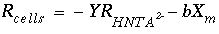
, (165)
where 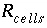
is the rate of cell growth (g cells/L/hr),
Y
is the microbial yield coefficient (g cells/mol Nta), and
b
is the first-order biomass decay coefficient (hr
-1
). The parameter values for these equations are listed in table 42.
Table 42.
--Kinetic rate parameters used in example 15
|
Parameter
|
Description
|
Parameter value
|
|
K
s
|
Half-saturation constant for donor
|
7.64e-7 mol/L
|
|
K
a
|
Half-saturation constant for acceptor
|
6.25e-6 mol/L
|
|
q
m
|
Maximum specific rate of substrate utilization
|
1.418e-3 mol Nta/g cells/hr
|
|
Y
|
Microbial yield coefficient
|
65.14 g cells/mol Nta
|
|
b
|
First-order microbial decay coefficient
|
0.00208 hr
-1
|
Sorption Reactions
Tebes-Steven and Valocchi (1997) defined kinetic sorption reactions for Co
2+
and CoNta
-
by the rate equation:
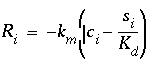
, (166)
where
i
is either Co
2+
or CoNta
-
(mol/L),
s
i
is the sorbed concentration (mol/g sediment), 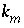
is the mass transfer coefficient (hr
-1
), and 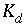
is the distribution coefficient (L/g). The values of the coefficients are given in table 43
Table 43.
--Sorption coefficients for Co
2+
and CoNta
-
|
Species
|
k
m
|
K
d
|
|
Co
2+
|
1 hr
-1
|
5.07e-3 L/g
|
|
CoNta
-
|
1 hr
-1
|
5.33e-4 L/g
|
The values of
K
d
were defined to give retardation coefficients of 20 and 3 for Co
2+
and CoNta
-
respectively. Because the sorption reactions are defined to be kinetic, the initial moles of these reactants and the rates of reaction are defined with
KINETICS and
RATES data blocks; no surface definitions (
SURFACE,
SURFACE_MASTER_SPECIES, or
SURFACE_SPECIES) are needed. Furthermore, all kinetic reactants are immobile, so that the sorbed species are not transported.
When modeling with PHREEQC, kinetic reactants must be charge balanced. For sorption of Co
2+
and CoNta
-
, 1 mmol of NaCl was added to the solution definitions to have counter ions for the sorption process. The kinetic sorption reactions were then defined to remove or introduce (depending on the sign of the mole transfer) CoCl
2
and NaCoNta, which are charge balanced. To convert from moles sorbed per gram of sediment (
s
i
) to moles sorbed per liter of water, it is necessary to multiply by the grams of sediment per liter of water, 3.75e3 g/L.
Input Data Set
Table 44 shows the input data set derived from the preceding problem definition. Although rates have been given in units of mol/L/hr, rates in PHREEQC are always mol/s and all rates have been adjusted to seconds in the definition of rate expressions in the input data set. It is assumed that a volume of 1 L of water is in each cell, which is reasonable for the current problem because the mass of water in each solution is nearly 1 kg and the solutions are relatively dilute. If the mass of water in a solution deviates significantly from 1 kg, the assumption of a constant volume may break down.
The 10-meter column was discretized with 10 cells of 1 meter each. The first two
SOLUTION data blocks define the infilling solution and the initial solution in cells 1 through 10.
The
RATES data block defines the rate expressions for four kinetic reactions: HNta-2, Biomass, Co_sorption, and CoNta_sorption. The rate expressions are initiated with
-start, defined with numbered Basic-language statements, and terminated with
-end. The last statement of each expression is
SAVE followed by a variable name. This variable is the number of moles of reaction over the time subinterval and is calculated from an instantaneous rate (mol/s) times the length of the time subinterval (s), which is given by the variable "TIME". Lines 30 and 20 in the first and second rate expressions and line 10 in the third and fourth rate expressions adjust parameters to units of seconds from units of hours. The function "MOL" returns the concentration of a species (mol/kgw) and the function "M" returns the moles of the reactant for which the rate expression is being defined; "KIN" returns the moles of a kinetic reactant, which may be any of the reactants defined for a cell. The functions "PUT" and "GET" are used to save and retrieve a term that is common to both the HNta-2 and Biomass rate expressions.
The
KINETICS data block defines the names of the rate expressions that apply to each cell; cells 1 through 10 are defined simultaneously in this example. For each rate expression that applies to a cell, the formula of the reactant (
-formula) and the moles of the reactant initially present (
-m, if needed) are defined. It is also possible to define a tolerance (
-tol), in moles, for the accuracy of the numerical integration for a rate expression. Note that the HNta-2 rate expression generates a negative rate, so that coefficients in the formula that are positive remove elements from solution and coefficients that are negative add elements to solution. In general, if the product of the rate and the coefficient is positive, the element is entering solution and if the product is negative, the element is leaving solution. The biomass reaction adds "H 0.0", or no moles of hydrogen, which specifies that the kinetic reaction for biomass growth does not add or remove elements from solution. The assimilation of carbon and nutrients that is associated with biomass growth is ignored in this simulation.
The
SELECTED_OUTPUT data block causes the molalities of the aqueous species Nta-3, CoNta-, HNta-2 and Co+2 to be written to the file
ex15.sel
. To each line in the file, the
USER_PUNCH data block appends the time (in hours), the sorbed concentrations converted to mol/g sediment, and the biomass.
The first
TRANSPORT data block defines the first 20 hours of the experiment, during which Nta and cobalt are added at the column inlet. The column is defined to have 10 cells (
-cells) of length 1 m (
-length). The duration of the advective-dispersive transport simulation is 20 time steps (
-shifts) of 3600 seconds (
-time_step). The direction of flow is forward (
-flow_direction). Each end of the column is defined to have a flux boundary condition (
-boundary_condition). The dispersivity is 0.05 m (
-dispersivity) and the diffusion coefficient is set to zero (
-diffusion_coef). Data are written to the selected-output file only for cell 10 (
-punch_cells) after each shift (
-punch_frequency). Data are written to the output file only for cell 10 (
-print_cells) after every five shifts (
-print_frequency)
After the first advective-dispersive transport simulation, a new infilling solution is defined (
SOLUTION 0), which contains no Nta or cobalt. For the associated initial solution calculation, printing to the selected-output file is eliminated and then reinstated (
-selected_out false and -
selected_out true, in
PRINT data blocks).
Finally, the second
TRANSPORT data block defines the final 55 hours of the experiment, during which Nta and cobalt are not present in the infilling solution. All parameters are the same as in the previous
TRANSPORT data block, only the number of advection steps (
-shifts) is increased to 55.
Table 44.
--Input data set for example 15
TITLE Example 15.--1D Transport: Kinetic Biodegradation, Cell Growth, and Sorption
***********
PLEASE NOTE: This problem requires database file ex15.dat!!
***********
SOLUTION 0 Pulse solution with Nta and cobalt
units umol/L
pH 6
C .49
O(0) 62.5
Nta 5.23
Co 5.23
Na 1000
Cl 1000
END
SOLUTION 1-10 Background solution initially filling column # 1-20
units umol/L
pH 6
C .49
O(0) 62.5
Na 1000
Cl 1000
END
RATES Rate expressions for the four kinetic reactions
#
HNta-2
-start
10 Ks = 7.64e-7
20 Ka = 6.25e-6
30 qm = 1.407e-3/3600
40 f1 = MOL("HNta-2")/(Ks + MOL("HNta-2"))
50 f2 = MOL("O2")/(Ka + MOL("O2"))
60 rate = -qm * KIN("Biomass") * f1 * f2
70 moles = rate * TIME
80 PUT(rate, 1) # save the rate for use in Biomass rate calculation
90 SAVE moles
-end
#
Biomass
-start
10 Y = 65.14
20 b = 0.00208/3600
30 rate = GET(1) # uses rate calculated in HTNA-2 rate calculation
40 rate = -Y*rate -b*M
50 moles = -rate * TIME
60 if (M + moles) < 0 then moles = -M
70 SAVE moles
-end
#
Co_sorption
-start
10 km = 1/3600
20 kd = 5.07e-3
30 solids = 3.75e3
40 rate = -km*(MOL("Co+2") - (M/solids)/kd)
50 moles = rate * TIME
60 if (M - moles) < 0 then moles = M
70 SAVE moles
-end
#
CoNta_sorption
-start
10 km = 1/3600
20 kd = 5.33e-4
30 solids = 3.75e3
40 rate = -km*(MOL("CoNta-") - (M/solids)/kd)
50 moles = rate * TIME
60 if (M - moles) < 0 then moles = M
70 SAVE moles
-end
KINETICS 1-10 Four kinetic reactions for all cells # 1-20
HNta-2
-formula C -3.12 H -1.968 O -4.848 N -0.424 Nta 1.
Biomass
-formula H 0.0
-m 1.36e-4
Co_sorption
-formula CoCl2
-m 0.0
-tol 1e-11
CoNta_sorption
-formula NaCoNta
-m 0.0
-tol 1e-11
SELECTED_OUTPUT
-file ex15.sel
-mol Nta-3 CoNta- HNta-2 Co+2
USER_PUNCH
-heading hours Co_sorb CoNta_sorb Biomass
-start
10 punch TOTAL_TIME/3600 + 1800/3600 # TOTAL_TIME/3600 + 900/3600
20 punch KIN("Co_sorption")/3.75e3
30 punch KIN("CoNta_sorption")/3.75e3
40 punch KIN("Biomass")
-end
TRANSPORT First 20 hours have Nta and cobalt in infilling solution
-cells 10 # 20
-length 1 # 0.5
-shifts 20 # 40
-time_step 3600 # 1800
-flow_direction forward
-boundary_condition flux flux
-dispersivity .05
-correct_disp true
-diffusion_coef 0.0e-9
-punch_cells 10 # 20
-punch_frequency 1 # 2
-print_cells 10 # 20
-print_frequency 5 # 10
END
PRINT
-selected_out false
SOLUTION 0 New infilling solution, same as background solution
units umol/L
pH 6
C .49
O(0) 62.5
Na 1000
Cl 1000
END
PRINT
-selected_out true
TRANSPORT Last 55 hours with background infilling solution
-shifts 55 # 110
END
Grid Convergence
With advective-dispersive-reactive transport simulations, it is always necessary to check the numerical accuracy of the results. In general, there will not be analytical solutions for these complex simulations, so the only test of numerical accuracy is to refine the grid and time step, rerun the simulation, and compare the results. If simulations on two different grids give similar results, there is some assurance that the numerical errors are relatively small. If simulations on two different grids give significantly different results, the grid must be refined again and the process repeated. Unfortunately, doubling the grid size at least quadruples the number of solution calculations that must be made because the number of cells doubles and the time step is halved. If the cell size approaches the size of the dispersivity, it may require even more solution calculations because the number of mix steps in the dispersion calculation will increase as well.
Table 45.
--Revised
TRANSPORT data block for example 15 for grid refinement to a 20-cell model
TRANSPORT Last 55 hours with background infilling solution
-cells 20
-length 0.5
-shifts 40
-time_step 1800
-flow_direction forward
-boundary condition flux flux
-dispersivity .05
-diffusion_coef 0.0e-9
-punch_cells 20
-punch_frequency 2
-print_cells 20
-print_frequency 10
END
To test grid convergence in this example, the number of cells in the column were doubled, for a total of 20 cells. All keyword data blocks that defined compositions for the range 1-10 were changed to 1-20. In addition, the parameters for advective-dispersive transport were adjusted to be consistent with the new number of cells. Table 45 shows the first
TRANSPORT data block adjusted for 20 cells. The number of cells and number of shifts are doubled; the cell length and time step are halved. To print information for the same location as the 10-cell model (the end of the column), the
-punch_cells and
-print_cells are set to cell 20. To print information at the same time in the simulation as the 10-cell model,
-punch_frequency is set to every two shifts,
-print_frequency is set to every 10 shifts, and the time step for going from the cell-midpoint to the column-end is halved on line 10 in
USER_PUNCH. All of the changes to make a 20-cell model are also noted in table 44 by comments at the end of lines.
Results
The distributions of aqueous and immobile constituents in the column at the end of 75 hours are shown in figures 15 and 16 for the 10- and 20-cell models. In the experiment, two pore volumes of water with Nta and cobalt were introduced to the column over the first 20 hours and then followed by 5.5 pore volumes of background water over the next 55 hours. At 10 hours, HNta
2-
begins to appear at the column outlet along with a rise in the pH (fig. 15). If Nta and cobalt were conservative and dispersion were negligible, the graph would show square pulses that increase at 10 hours and decrease at 30 hours. However, the movement of the Nta and cobalt is retarded relative to conservative movement by the sorption reactions. The peak in Nta and cobalt concentrations occurs in the CoNta
-
complex between 30 and 40 hours. The peak in Co
2+
concentration is even more retarded by its sorption reaction and does not show up until near the end of the experiment.
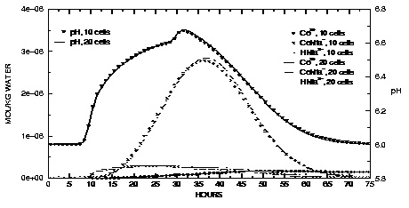
Figure 15.
--Aqueous concentrations and pH values at the outlet of the column for Nta and cobalt transport simulations with 10 and 20 cells.
In figure 16, solid phase concentrations are plotted against time for concentrations in the last cell of the column. The sorbed CoNta
-
concentration peaks between 30 and 40 hours and slightly lags behind the peak in the dissolved concentration of the CoNta
-
complex. Initially, no Nta is present in the column and the biomass decreases slightly over the first 10 hours because of the first-order decay rate for the biomass. As the Nta moves through the cell, the biomass increases as the Nta substrate becomes available. After the peak in Nta has moved through the column, biomass concentrations level off and then begin to decrease because of decay. The
K
d
for cobalt sorption relates to a greater retardation coefficient than the
K
d
for CoNta
-
sorption, and the sorbed concentration of Co
2+
appears to be still increasing at the end of the experiment.
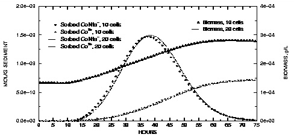
Figure 16.
--Concentrations of sorbed species and biomass at the outlet of the column for Nta and cobalt transport simulations with 10 and 20 cells.
Both the 10-cell and the 20-cell models give similar results, which indicates that the numerical errors in the advective-dispersive transport simulation are relatively small, and the results are very similar to results given by Tebes-Steven and Valocchi (1997, 1998). However, Tebes-Steven and Valocchi (1997) included another part to their test problem that increased the rate constants for the sorption reactions from 1 to 1000 hr
-1
. The increased rate constants generate a stiff set of partial differential equations, in which the rate-limited processes occur on different time scales. The stiff problem, with very fast sorption reactions, proved intractable for the explicit algorithm of PHREEQC, but could be solved successfully when the fast kinetic sorption reaction was calculated as the equilibrium process that it effectively constituted. However, even with equilibrium sorption, grid convergence was computationally much more intensive; it was necessary to use 100 cells or more to arrive at a satisfactory solution. As an estimate of relative CPU times, the 10-cell model took 270 seconds and the 20-cell model took 732 seconds to run on a Pentium I, 133 MHz computer. A 200-cell model took approximately 600 times more CPU time than the 10-cell model.
| Next|| Previous || Top |